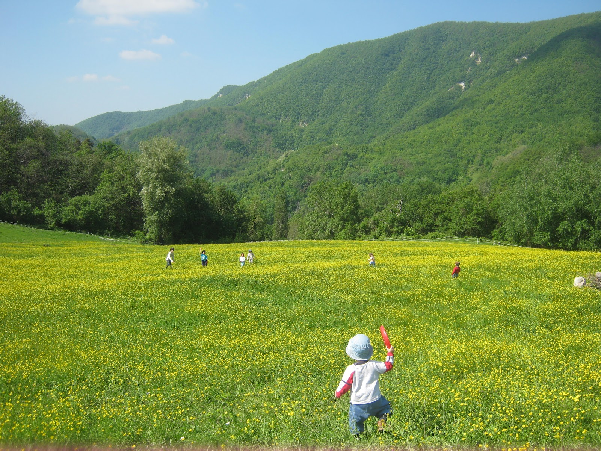
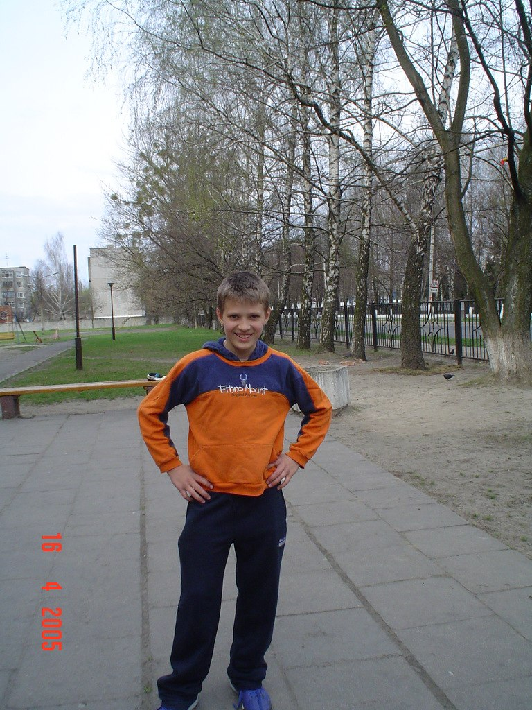
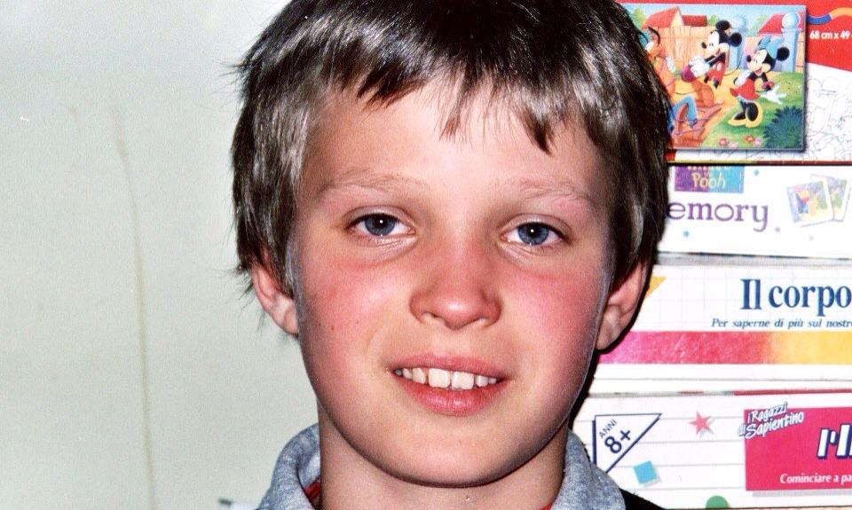
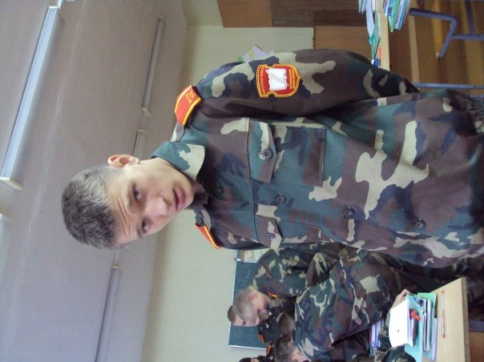
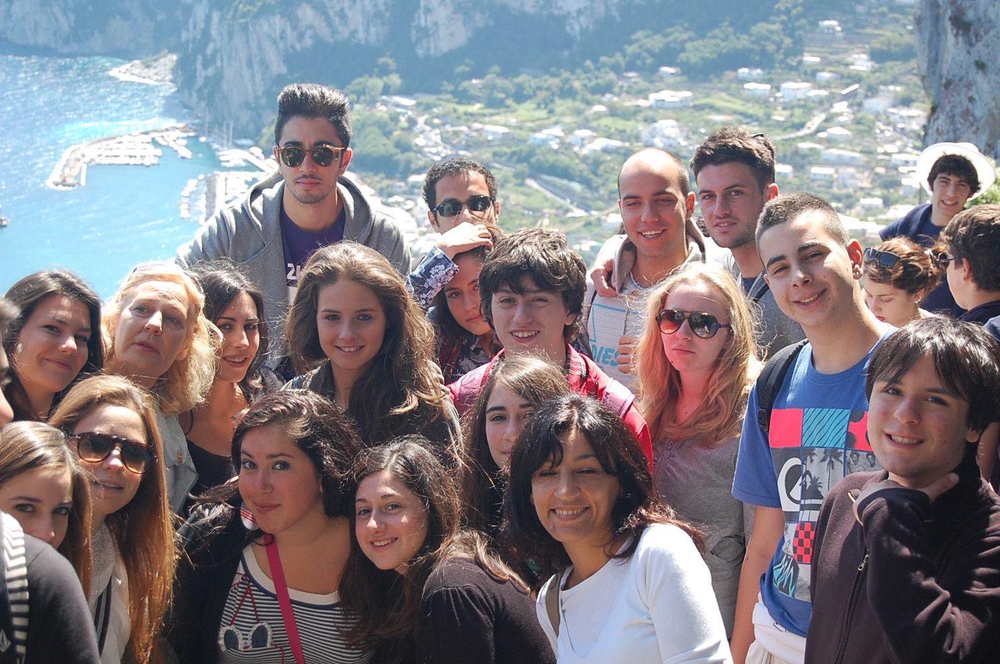

-

Brest
Orfanotrofio
I primi ricordi che io abbia mai avuto sono stati in un orfanotrofio. Lì giocavo tutti i giorni nel grande giardino; con le altalene mi sembrava di volare, e ogni tanto vedevo i paracadutisti lanciarsi dall'aereo. Già capivo che avrei legato la mia vita a qualcosa di simile..
-

Pinsk
Scuola
Non ho parole per descrivere i primi pensieri sul nuovo posto. Era tutto più grande e mi sentivo molto più insignificante rispetto ai 400 altri ragazzi. Non avevo la possibilità di giocare sul prato come prima. Qui ho passato ben 12 anni.
-

Roma
Famiglia
È stato qui, a 9 anni, che sono venuto per la prima volta in Italia e ho conosciuto mamma e papà. Per molti anni, ho continuato a venire in estate e in inverno. L'adozione è rimasta solo un sogno per molto tempo a causa della politica interna bielorussa.
-

Baranvici
Militare
Nel momento in cui pensi che tutto stia andando alla meraviglia, il destino cambia le carte in tavola. Non immaginavo che sarebbe stato decisamente meglio per me, ma all'inizio non mi è piaciuto affatto. Mi trasferirono a Baranovici per fare il cadetto. Qui ho scoperto un nuovo modo di vedere il mondo, nuove amicizie e nuove delusioni.
-

Roma
Adozione
Finalmente l'adozione è avvenuta, seppur a un'età avanzata, decisa dal destino. Ho lasciato tutto alle spalle: desideri, amici, fratelli. Tuttavia, adesso, dopo anni, ho una famiglia. Qualcuno potrebbe dire che, forse, è un equo scambio.
-

Scuola
Liceo scientifico
Essendo straniero, il mio diploma russo non valeva in Italia, e per entrare nell'università ho dovuto finire il liceo.
-
Ingengeria
Meccanica
Essendo passionato di sfide, ho scelto ingengeria meccanica. In questi anni ho trovato tanti amici , imparato che tutto è possibile se ci si aplica.
-
Ingengeria Aerospaziale
Nuovi skills
Scoprire perche e come vola un aereo, ma anche scoprire che volgio continuare a studaire.
-
Volontariato in cambogia
La ricerca
Lavorando un pochino ho scoperto che non è per me un lavoro monotono. Ho iniziato lo studio del desing e dei nuovi linguaggi come JS. Nel frattempo ho fatto un mese in Camboggia come volontraio nella associazione Viva la vida.